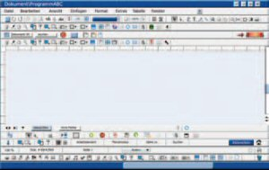
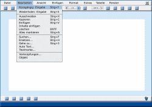
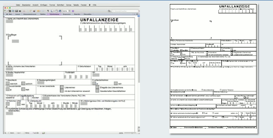

Die Bearbeitung von Aufgaben sowie die Darstellung auf dem Bildschirm werden sowohl durch die Software als auch durch die Hardware beeinflusst. Grundvoraussetzung für eine gute Darstellung ist deshalb die Erfüllung der Anforderungen des Abschnittes 8.2.1, insbesondere in Verbindung mit der eingesetzten Software. Dabei kann die eingesetzte Software nur dann sinnvoll beurteilt werden, wenn die zu bearbeitenden Aufgaben klar umrissen sind und feststeht, welche Nutzer mit welchen Fähigkeiten damit arbeiten sollen. Dies wird durch den sogenannten Nutzungskontext beschrieben, der die Benutzer, die Aufgaben, die Arbeitsmittel (Hardware, Software und Materialien) sowie die physikalische und soziale Umgebung umfasst.
| Anhang der Arbeitsstättenverordnung Nr. 6.5 | |
| (1) | Beim Betreiben der Bildschirmarbeitsplätze hat der Arbeitgeber dafür zu sorgen, dass der Arbeitsplatz den Arbeitsaufgaben angemessen gestaltet ist. Er hat insbesondere geeignete Softwaresysteme bereitzustellen. |
| (2) | Die Bildschirmgeräte und die Software müssen entsprechend den Kenntnissen und Erfahrungen der Beschäftigten im Hinblick auf die jeweilige Arbeitsaufgabe angepasst werden können. |
| (3) | Das Softwaresystem muss den Beschäftigten Angaben über die jeweiligen Dialogabläufe machen. |
| (4) | Die Bildschirmgeräte und die Software müssen es den Beschäftigten ermöglichen, die Dialogabläufe zu beeinflussen. Sie müssen eventuelle Fehler bei der Handhabung beschreiben und eine Fehlerbeseitigung mit begrenztem Arbeitsaufwand erlauben. |
| (5) | Eine Kontrolle der Arbeit hinsichtlich der qualitativen oder quantitativen Ergebnisse darf ohne Wissen der Beschäftigten nicht durchgeführt werden. |
Die Software muss gebrauchstauglich sein, das heißt sie sollte gewährleisten, dass Benutzer ihre Arbeitsaufgabe effektiv14, effizient15 und zufriedenstellend erledigen können.
Dies setzt voraus, dass die Grundsätze der Dialoggestaltung nach DIN EN ISO 9241-110, wie
beachtet und realisiert werden.
Bei der Darstellung von Informationen sollten die Erkenntnisse nach DIN EN ISO 9241-112 bezüglich
berücksichtigt werden. So wird der Nutzer dabei unterstützt, seine Aufmerksamkeit auf die Bearbeitung der jeweiligen Arbeitsaufgabe zu lenken und das Risiko einer Fehlinterpretation von Information wird reduziert.
Eine optimale Nutzung der Software wird noch nicht allein durch die Gebrauchstauglichkeit erreicht. Hinzu kommen muss die Bereitschaft des Nutzers, mit der Software die Aufgaben motiviert und in einem kontinuierlichen Verbesserungsprozess zu bearbeiten. Dies ist nur in einem hochwertigen Nutzungskontext mit angemessenen ergonomischen Bedingungen sowie aktivierenden sozialen Beziehungen und Strukturen möglich.
Das bedeutet unter anderem, dass die Software die sozialen Beziehungen im Unternehmen nicht belasten darf – beispielsweise durch einen schnellen Wechsel der Versionen, der dazu führt, dass Beschäftigte mit unterschiedlichen nicht kompatiblen Versionen arbeiten. Dies kann zu Konflikten sowie Problemen in der Zusammenarbeit führen und das Betriebsklima belasten. Eine gebrauchstaugliche Software hat schließlich auch nur dann einen hohen Nutzen, wenn Führungskräfte und soziale Beziehungen im Unternehmen einen motivierten Umgang mit der Software fördern – zum Beispiel durch Beteiligung der Beschäftigten an der Gestaltung der Arbeitsprozesse, umfassende Informationen oder die Möglichkeiten, Verbesserungsprozesse einleiten zu können.
Erst wenn die Software optimal in einem solchen hochwertigen Nutzungskontext verwendet wird, kann von Nutzungsqualität gesprochen werden.
Auch die barrierefreie Gestaltung von Software im Sinne der Barrierefreien Informationstechnik-Verordnung – BITV 2.0 sollte berücksichtigt werden. Hier wird mithilfe von vier Prinzipien, zwölf Anforderungen und 61 Bedingungen barrierefreie Software spezifiziert. Durch Berücksichtigung der BITV 2.0 kann eine hohe Zugänglichkeit von Softwareprodukten für unterschiedlichste Nutzergruppen erreicht werden.
Ein Dialog ist aufgabenangemessen, wenn er den Benutzer unterstützt, seine Arbeitsaufgabe effizient zu erledigen, das heißt negative Beanspruchungsfolgen vermieden werden (Abbildung 48).

Abb. 48 Aufgabenangemessenheit (Negativbeispiel)
Auf der Basis der auszuführenden Tätigkeiten ist ein Anforderungsprofil an die Software zu erstellen. Sofern sich Arbeitsschritte aus der Eigenschaft des Systems ergeben, nicht jedoch aus den Aufgaben der Benutzer, sollen sie im Allgemeinen vom System selbst ausgeführt werden. Die Software soll keine Veränderung der Arbeitsabläufe erfordern, die im Gegensatz zur tätigkeitsbedingten zeitlichen Reihenfolge stehen. Dies schließt nicht aus, dass bei organisatorischen Änderungen die Arbeitsabläufe geprüft und gegebenenfalls verbessert werden.
Die verwendeten Begriffe und Symbole müssen den arbeitsspezifischen Regelungen entsprechen sowie widerspruchsfrei, eindeutig und möglichst abkürzungsfrei sein.
Dies gilt beispielsweise für Funktionsbeschreibungen, Bildschirmmasken, Hilfetexte, sonstige Darstellungen auf dem Bildschirm sowie Benutzerhandbücher.
Praktische Anforderungen:
Ein Dialog ist selbstbeschreibungsfähig, wenn jeder einzelne Dialogschritt durch Rückmeldung des Dialogsystems unmittelbar verständlich ist oder dem Benutzer auf Anfrage erklärt wird (Abbildung 49). Nach jeder Handlung der Benutzer sollte das Dialogsystem eine Rückmeldung in aufgabenangemessener Form geben.
Abb. 49 Selbstbeschreibungsfähigkeit: Auswahlmöglich-
keiten für die Schriftart. Die aktuell ausgewählte Schriftart
wird durch einen farbigen Balken gekennzeichnet. gekennzeichnet.
Um den Benutzern die Dialogschritte verständlich zu machen, sollten bei der Gestaltung von Rückmeldungen und Erläuterungen folgende Gesichtspunkte beachtet werden:
Ein Dialog ist steuerbar, wenn der Benutzer in der Lage ist, den Dialogablauf zu starten sowie seine Richtung und Geschwindigkeit zu beeinflussen, bis das Ziel erreicht ist (Abbildung 50).

Ein Dialogsystem ist steuerbar, wenn es unter anderem
Die zur Realisierung der Steuerbarkeit zu treffenden Maßnahmen dürfen nicht die aufgabenbedingte Funktionserfüllung am Arbeitsplatz beeinträchtigen. Wenn die Realisierung dieser Anforderung anderweitige ergonomische Nachteile für den Benutzer nach sich zieht – zum Beispiel übermäßig verlängerte Antwortzeiten bei nicht ausreichender Systemleistung –, ist dem wichtigeren Kriterium der Vorzug zu geben.
Ein Dialog ist fehlertolerant, wenn das beabsichtigte Arbeitsergebnis trotz erkennbar fehlerhafter Eingaben entweder mit keinem oder mit minimalem Korrekturaufwand durch den Benutzer erreicht werden kann (Abbildung 51).
Abb. 51 Fehlertoleranz
Dialoge sind fehlertolerant, wenn unter anderem
Ein Dialog ist erwartungskonform, wenn er konsistent ist und den Merkmalen beziehungsweise den Belangen des Benutzers aus dem Nutzungskontext entspricht. Dazu gehören zum Beispiel Kenntnisse aus dem Arbeitsgebiet, der Ausbildung und der Erfahrung des Benutzers sowie den allgemein anerkannten Konventionen (Abbildung 52).

Abb. 52 Erwartungskonformität: WYSIWYG (What you see is what you get) – die Bildschirmanzeige entspricht dem Ausdruck
Dialoge sind erwartungskonform, wenn unter anderem
Die Einheitlichkeit des Dialogverhaltens bezieht sich insbesondere auf solche Eigenschaften von Dialogsystemen, die unabhängig von speziellen Anwendungen sind.
Dialoge sind individualisierbar, wenn die Benutzer die Dialoge an die individuellen Fähigkeiten und Bedürfnisse gemäß den Erfordernissen der Aufgaben anpassen können.
Dialoge sind individualisierbar, wenn unter anderem
Um den Benutzern eine Aufgabenerledigung mit vertretbarem Aufwand zu ermöglichen, ist es außerdem unerlässlich, sie beim Erlernen der eingesetzten Software zu unterstützen und ihnen übersichtliche und gut lesbare Bildschirminhalte (Masken) zur Verfügung zu stellen. Diese Anforderungen werden unter den Begriffen "Lernförderlichkeit", "Organisation der Information", "Grafische Objekte" und "Kodierverfahren" behandelt.
Ein Dialog ist lernförderlich, wenn er den Benutzer beim Erlernen des Dialogsystems unterstützt und anleitet.
Dialoge sind lernförderlich, wenn unter anderem
Eine einfache, schnelle und sichere visuelle Erfassung sowie gedankliche Verarbeitung wird unterstützt durch:
Durch sinnvolle Anwendung der aufgezeigten Kriterien wird eine Verbesserung der Lesbarkeit, Verständlichkeit, Widerspruchsfreiheit, Unterscheidbarkeit, Wahrnehmbarkeit, Prägnanz und Klarheit erreicht (Abbildung 53).
Abb. 53 Anordnung und Kodierung: Maskengestaltung
Insgesamt ist jedoch auf einen sinnvollen Einsatz der dargestellten Werkzeuge zu achten. So sollten beispielsweise nicht mehr als die notwendigen Icons in einem Arbeitsbereich angeboten werden, die Farbgebung sollte auf maximal sechs Farben begrenzt sein und Effekte, wie Blinken oder Popups, sollten nur in speziellen Aufgabenstellungen möglichst sparsam eingesetzt werden.
Weitere Literatur
|